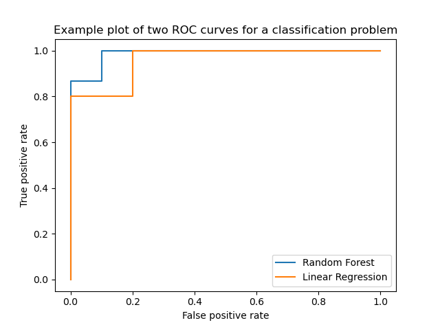
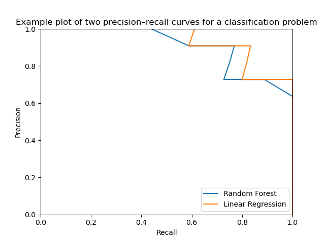
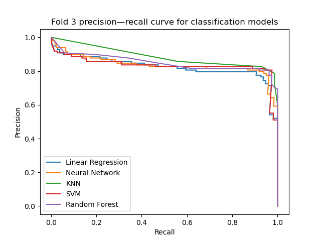
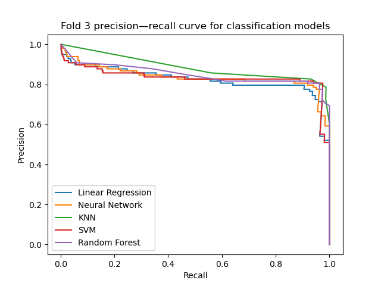
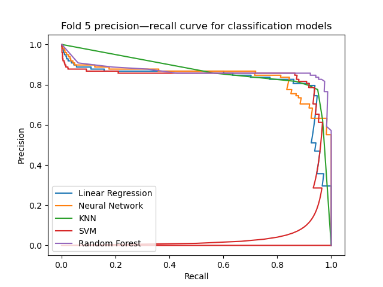
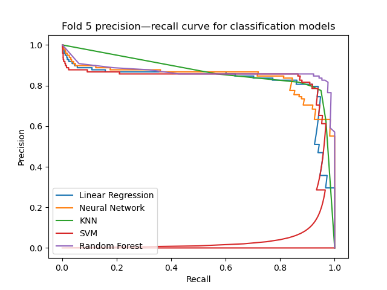

Introduction
This book gives an overview of using machine learning techniques to classify a dataset of credit card transactions to try and detect fraudulent transactions.
We will be using Python and the scikit-learn package [1] in our analysis. Many of the ideas we discuss can be explored in much greater detail in the references given in each section—many of the topics discussed here will only be covered in brief, but the literature is vast and rich on machine learning, growing rapidly each day.
[1] Pedregosa et al. Scikit-learn: Machine Learning in Python. Journal of Machine Learning Research 12, pp. 2825–2830. (2011)
Assumed Knowledge
- We'll be using Python, so a familiarity with the language is helpful.
- In order to discuss the algorithms and statistical techniques, we'll be using standard mathematical concepts and notation. We'll try to be rigorous but also explore the intuitive ideas behind the algorithms, most of which can be understood quite well graphically.
Goals
By the end of this book, we will have constructed a classifier using modern techniques that can achieve high accuracy in detecting fraud on the data we use. On the way, we'll discuss many interesting topics in machine learning and statistical analysis.
Licence
For the most recent copy of this book, see https://github.com/htlambley.
I release all work in this book into the public domain as given by the Unlicense. All images in this book were generated by myself using Python's matplotlib.
The dataset is used under the Database Contents License v1.0 and the rights remain with the Machine Learning Group, Université Libre de Bruxelles.
Background
In the UK, fraud losses totalled £620.6 million in 2019, with 2,745,539 recorded incidents occurring in that year alone [1, p. 13]. Over 98% of these losses were absorbed by banks and card issuers, and the remaining losses were paid by cardholders.
These losses represent a huge problem in the form of lost profit and increased overhead costs for cardholders. Even small advances in the accuracy of fraud detection systems would cut down on these losses.
There is certainly opportunity for improvement: while £999.2 million of fraudulent transactions were prevented by banks [1], this only accounts for about 62% of losses.

If one further percentage point of fraud could be prevented, this would reduce fraud losses by approximately £16 million (as of 2019) [1].
On the other hand, the savings in reduced fraud may not be worth it if this leads to increased payment friction. Inconvenience and declined card transactions also lead to lost business, so a compromise is needed.
[1] UK Finance. Fraud — The Facts 2020. URL.
Dataset
We will study the Credit Card Fraud dataset and construct a model to detect fraudulent payments. This dataset was collected by Worldline the Machine Learning Group at the Université Libre de Bruxelles and later published on the data science platform Kaggle. We will start by viewing the first few rows of the dataset and getting a flavour of the information we have to work with.
X, y = load_data()
X.head()
| Time | V1 | V2 | V3 | V4 | V5 | V6 | V7 | V8 | V9 | ... | V21 | V22 | V23 | V24 | V25 | V26 | V27 | V28 | Amount | Class | |
|---|---|---|---|---|---|---|---|---|---|---|---|---|---|---|---|---|---|---|---|---|---|
| 0 | 0.0 | -1.359807 | -0.072781 | 2.536347 | 1.378155 | -0.338321 | 0.462388 | 0.239599 | 0.098698 | 0.363787 | ... | -0.018307 | 0.277838 | -0.110474 | 0.066928 | 0.128539 | -0.189115 | 0.133558 | -0.021053 | 149.62 | 0 |
| 1 | 0.0 | 1.191857 | 0.266151 | 0.166480 | 0.448154 | 0.060018 | -0.082361 | -0.078803 | 0.085102 | -0.255425 | ... | -0.225775 | -0.638672 | 0.101288 | -0.339846 | 0.167170 | 0.125895 | -0.008983 | 0.014724 | 2.69 | 0 |
| 2 | 1.0 | -1.358354 | -1.340163 | 1.773209 | 0.379780 | -0.503198 | 1.800499 | 0.791461 | 0.247676 | -1.514654 | ... | 0.247998 | 0.771679 | 0.909412 | -0.689281 | -0.327642 | -0.139097 | -0.055353 | -0.059752 | 378.66 | 0 |
| 3 | 1.0 | -0.966272 | -0.185226 | 1.792993 | -0.863291 | -0.010309 | 1.247203 | 0.237609 | 0.377436 | -1.387024 | ... | -0.108300 | 0.005274 | -0.190321 | -1.175575 | 0.647376 | -0.221929 | 0.062723 | 0.061458 | 123.50 | 0 |
| 4 | 2.0 | -1.158233 | 0.877737 | 1.548718 | 0.403034 | -0.407193 | 0.095921 | 0.592941 | -0.270533 | 0.817739 | ... | -0.009431 | 0.798278 | -0.137458 | 0.141267 | -0.206010 | 0.502292 | 0.219422 | 0.215153 | 69.99 | 0 |
Some immediate observations:
- All the data is numeric, which means it will be very easy to input this into standard machine learning models.
- The only columns with an obvious name are
Time,AmountandClass. In fact, the remaining features in this dataset are the result of Principal Component Analysis which was done by the authors of the dataset. This ensures the privacy of the cardholders involved in the dataset, but means we cannot apply any outside knowledge to these features as we do not know the transformation applied.
Binary Classification
We'll briefly review the mathematics of the problem in the context of statistical learning theory. This section assumes a basic familiarity with probability theory, distributions and set notation. A thorough reference on the necessary notions in probability is [1].
We have a dataset consisting of transactions, each of which has \(n\) features and a label to say if that transaction is fraudulent or not. More formally, we are given training data \[ D = \Big \{ (x_i, y_i) \Big \} \subset \mathcal{X} \times \mathcal{Y}, \] where \(\mathcal{X}\) is the space of features. As we have \(n\) real-valued features, \(\mathcal{X}\) can be thought of as the space of real-valued vectors, i.e. \(\mathcal{X} = \mathbb{R}^n\). The space \(\mathcal{Y}\) is the set of possible labels, which for our binary classification problem means \(\mathcal{Y} = \{0, 1\}\).
Our goal is to find a suitable classifier — in other words, a function — which we denote \(h \colon \mathcal{X} \to \mathcal{Y}\), based on the training data \(D\).
We can model these training data as coming from some unknown probability distribution on \(\mathcal{X} \times \mathcal{Y} \). This means that there is some underlying rule that gives the probability of any \( (x, y) \in \mathcal{X} \times \mathcal{Y}\). If we knew this distribution, we could construct a "perfect" classifier, known as the Bayes classifier, which minimises the probability of error.
There are many distributions where even the Bayes classifier is not completely accurate: suppose \(X \sim \mathrm{Uniform}[0, 1]\) and \(Y \sim \mathrm{Bernoulli}(1/2)\) with \(X\) and \(Y\) independent. Intuitively, \(X\) does not predict \(Y\) at all, so no learner can be constructed that will perform any better than random guessing on the distribution. While we can happily try to fit a model on the training data, this will merely "learn" using the noise in the problem. The Bayes classifier in this case can be constructed by just picking 0 or 1 with equal probability. On the entire distribution, we would expect this classifier to be correct 50% of the time. Any other learner will be worse than this on the distribution.
Risk
We would like this classifier to generalise well to new data sampled from the distribution. So, given a sample \((x, y) \in \mathcal{X} \times \mathcal{Y} \), we can choose some loss function \( L(h(x), y) \) which measures how badly incorrect the prediction \(h(x)\) is, and define the empirical risk of a classifier given \(m\) points \( \{ (x_i, y_i) \} \) to be
\[ \hat{R}(h) = \frac1m \sum_{i = 1}^m L(h(x_i), y_i). \]
The empirical loss gives us the loss on our training data, but we really wish to minimise the loss over the entire distribution. This quantity is known as the (generalisation) risk, \(R(h)\). Let \((X, Y)\) be random variables with the distribution on \(\mathcal{X} \times \mathcal{Y} \). Then the risk is given by \[ R(h) = \mathbb{E}\big[L(h(X), Y)\big]. \]
Empirical Risk Minimisation
We will construct classifiers according to the empirical risk minimisation principle [2, §1.5]. Since we do not know the distribution on \(\mathcal{X} \times \mathcal{Y}\), we cannot directly minimise \(R(h)\). But, under the assumption that the training data are independent realisations from this distribution, the expectation of the empirical risk is in fact the generalisation risk.
Therefore, we wish to find parameters for any model we construct which minimise the empirical risk, and hope that this leads to a low generalisation risk.
Intuition on Data Analysis
For \(n \leq 3\), classification can be understood visually: we can plot the points on a graph with their corresponding labels and try to devise a rule which distinguishes each class. In higher dimensions, the idea is the same, but we cannot just plot a graph to understand the geometry of the feature space.
Many of the algorithms used in machine learning operate on simple principles. Support vector machines, for example, look for a hyperplane to separate the points of each class. If the data are linearly separable, in other words it's possible to find a hyperplane which splits the two groups, linear support vector machines can learn a rule with zero empirical risk.
K Nearest Neighbours models are equally intuitive: given a point we want to classify, we simply look for \(k\) points nearby, and choose the most common label for all of those points.
Part of the challenge of data science is to gain similar intuititon for data with tens, or hundreds, of dimensions, and understand the relationships, which may be highly non-linear.
An interesting visualisation of the links between neural networks and topology is given in [3] which is well worth reading.
[1] Roman Vershynin. High-Dimensional Probability: An Introduction with Applications in Data Science. Cambridge University Press, Cambridge. (2018)
[2] Vladimir N. Vapnik. The Nature of Statistical Learning Theory. 2nd ed. Springer, New York, NY. (2000)
[3] Christopher Olah. Neural Networks, Manifolds, and Topology. URL. (2014)
Exploratory Data Analysis
Before we go on to construct models on the dataset, we will first spend some time exploring the dataset to gain some intuition on which approaches ought to work best. This process is often called exploratory data analysis as developed by John W. Tukey [1, 2]. It allows us to seek to understand the data without having to develop a hypothesis or model a priori and testing if the data support such a hypothesis.
Exploratory data analysis will be particularly important given we do not know much about the features. However, we need to be very careful about the problem of data leakage before we go ahead and draw conclusions from the data.
Data Leakage
To understand the problem of data leakage, we need to think about how our model will be used in practice:
- We select a model and fit its parameters using training data that we have collected.
- We then want to maximise its performance on unseen data in the future.
We don't know anything about the data we will encounter in the future: whether our model is for predicting stock prices, supermarket demand or sentiment analysis, we don't have any information to go on other than what we've seen in the past, and what we reasonably expect to happen in the future.
The first step above omits a large number of steps in statistics and data science. We cannot simply pick a model out of thin air in the hope that it will work well on future data: instead we need to have some way of measuring which models work best on the training data.
This leads us to the idea of cross-validation. An excellent reference on this topic is [3, § 7.10]. As discussed in the section Binary Classification, so long as we may assume that the training data are independent realisations from the probability distribution, we can use the empirical risk minimisation principle to find a good model. To evaluate the performance of the model, we need some additional data independently drawn from the distribution that was not used to fit the model. We should not evaluate the final model performance on the data we trained from, as this will generally provide an estimate of the performance which is higher than the true performance on unseen data.
The simplest solution is to choose a hold-out set from the data we have. Given the dataset \(D \subset \mathcal{X} \times \mathcal{Y}\), we split \(D\) into two smaller sets: a training set \(T\) and a validation set \(V\). We should take care to ensure that the way we split the data ensures the two sets have a similar class balance. Intuitively, a classifier could learn the wrong prior probability for each class if the ratios are different in the training and validation set.
A slightly more sophisticated method splits the data into \(k\) folds, then trains on \(k - 1\) of these folds, while testing on the final fold. This allows us to construct multiple models by trying different combinations of folds: for example, we can split the data into 5 folds, train on 1–4 and test on 5. Or, we could train on 2–5 and test on 1.
[1] John W. Tukey. Exploratory Data Analysis. Addison–Wesley, Reading, MA. (1977)
[2] Exploratory Data Analysis. In: The Concise Encyclopedia of Statistics. Springer, New York, NY. DOI. (2008)
[3] Trevor Hastie et al. The Elements of Statistical Learning: Data Mining, Inference and Prediction. 1st ed. Springer, New York, NY. (2001)
Imbalanced Classes
In this dataset, the Class feature tells us which transactions were deemed to be fraudulent, denoted class 1, and which were deemed genuine, denoted class 0. We can very quickly see that there are vastly more genuine transactions in the dataset than fraudulent ones.

In the vast majority of cases, we will not be able to collect an equal number of points from each class. More unusual events such as spam or fraud are bound to show up less in data that we collect in a random sample. Very often, however, we care a lot more about the unusual events than the usual ones. [1]
When classes are very imbalanced, we should be aware of what can go wrong.
[1] Gary M. Weiss. "Foundations of Imbalanced Learning". In: Imbalanced Learning: Foundations, Algorithms, and Applications. 1st ed. Wiley, Hoboken, NJ. (2013)
Accuracy
In a binary classification problem with imbalanced classes, we can very easily make a classifier that sounds impressive but is in fact trivial. Suppose we'd like to construct a spam filter, and we know that approximately 90% of emails received are not spam. Then by constructing a classifier that considers every e-mail to be genuine, we can attain an accuracy of 90%. It isn't hard to see that this is hugely misleading, because the spam filter does absolutely nothing.
On our highly imbalanced dataset, the figures are even more misleading: we can attain an accuracy on the test set of about 99.8% by always labelling a transaction as genuine! It is clear that we need a different metric, because the difference between a bad classifier and the best possible classifier is just a change of 0.2% in the accuracy.
In fact, giving the problem some thought, we realise that the good classifiers in this problem would be a compromise between finding as many of the fraudulent cases as possible, and keeping the number of false positives as low as possible. The former can be measured by the precision metric. Recall that, in our context, this represents the number of fraud predictions that actually were fraud. This takes values between 0 (every case we flagged as fraud was actually genuine) and 1 (every case we flagged as fraud was fraudulent). Ideally, we want this to be as high as we can get.
The latter can be measured by recall of a classifier. This represents the fraction of fraudulent cases in the dataset that we correctly identify, and could also be called the true positive rate. Again, this takes values between 0 and 1, and we can trivially obtain a value of 1 by identifying every transaction as fraudulent. Such a classifier would have very low (but non-zero) precision as most of its predictions were wrong.
While we are talking about binary classification (i.e. building a model to decide whether a transaction is fraud or genuine), the models we will explore don't simply give a value on the dichotomy. Instead, they use some sort of decision function or threshold. If we vary this cutoff, we can achieve different levels of precision and recall; for example, we might be able to sacrifice some precision but correctly recall a higher percentage of fraudulent transactions. These choices can be explored using the precision–recall curve and the receiver operating characteristic curve.
Metrics
Let \(h \colon \mathcal{X} \to \mathcal{Y} = \{0, 1\}\) be a classifier. We can formally define the recall metric with respect to a set of data \(D = \{ (x_1, y_1), \dots, (x_n, y_n) \}\) as \[ \mathrm{Recall}(h; D) = \sum_{i = 1}^n \frac{\mathbf{1} \{ h(x_i) = 1 \cap y_i = 1\}}{\mathbf{1} \{ y_i = 1\}}.\] Likewise, precision is defined as \[ \mathrm{Precision}(h; D) = \sum_{i = 1}^n \frac{\mathbf{1} \{ h(x_i) = 1 \cap y_i = 1\}}{\mathbf{1} \{ h(x_i) = 1\}}.\] In other words, precision estimates the probability that if \(Y = 1\) given \(h(X) = 1\). Recall estimates the probability that a given fraudulent transaction is detected.
ROC and Precision–Recall
The receiver operating characteristic (ROC) curve for a classifier compares the true and false positive rate for different thresholds of the classifier. The graph plots the false positive rate on the x-axis against the true positive rate on the y-axis, and the ideal classifier is represented by the point (0, 1).
The precision–recall curve for a classifier plots the recall on the x-axis against the precision on the y-axis. The ideal classifier in this case is represented by the point (1, 1). Poor classifiers are ones with low precision or low recall.
In fact, the two curves are rather intimately related [2]. If a classifier dominates the precision–recall space, in other words if the curve lies strictly above any other curve at all points, then it also dominates in ROC space. There is some debate whether the ROC curve or precision–recall curve should be preferred on imbalanced binary classification problems [3].
Here are some examples of ROC and precision–recall curves. These were not generated from the same dataset, but give an idea of what to expect when plotting these curves for two different classifiers.


[2] Jesse Davis and Mark Goadrich. "The relationship between Precision-Recall and ROC curves". In: Proceedings of the 23rd international conference on Machine learning (ICML '06). Association for Computing Machinery, New York, NY, USA, pp. 233–240. (2006). DOI
[3] Takaya Saito and Marc Rehmsmeier. The precision-recall plot is more informative than the ROC plot when evaluating binary classifiers on imbalanced datasets. PloS One 10.3, e0118432. (2015). DOI.
Models
Imbalanced classes can be more difficult to learn for some models. An example of a model that might struggle is a \(k\)-nearest-neighbour classifier [4]. Depending on the geometry of the dataset, the larger class may dominate any predictions simply because there are so many more, but if we had a more balanced set, the minority class would be more easily predicted.
There are often adaptations to the models we use which are intended to be able to deal with imbalanced classes more easily, such as weighting the neighbours as proposed in [4]. As discussed in the final section of the book, there are other approaches we could consider in order to balance the dataset in a model-agnostic way, such as oversampling or synthetic generation of new data.
[4] Songbo Tan. Neighbor-weighted K-nearest neighbor for unbalanced text corpus. Expert Systems with Applications 28.4, pp. 667–671. DOI. (2005).
Seasonality
We'll take a closer look at the Time feature in this section. Time series data is often interesting and is present is many datasets from various domains. The archetypal example for time series data is stock market pricing, where we want to predict the price of a stock at time \(T\) given knowledge of all times \(t \leq T\).
Fraud and Time
Intuitively, we might expect the fraud rate to vary over the course of a day. Perhaps fraudsters prefer to operate at night when the cardholder is asleep? Or, it might be the case that genuine transactions occur less at night, so the chance of a transaction being fraud increases.
In our dataset, we are given the Time variable, which measures the time elapsed since the first transaction in the dataset. We don't know the date or time that the first transaction occurred, so we can't meaningfully reconstruct the times of each transaction. We can, however, break the data into 24 bins, each representing the number of hours (modulo 24) since the start of the dataset.
from util import load_data
import matplotlib.pyplot as plt
X, y = load_data()
X_fraud = X[y == 1]
X_genuine = X[y == 0]
# Create new numpy array representing the "hour" of the data relative to the starting time
fraud_hour = (X_fraud.Time / 3600) % 24
genuine_hour = (X_genuine.Time / 3600) % 24
plt.hist([fraud_hour, genuine_hour], label=['Fraud', 'Genuine'], bins=24, density=True)
plt.legend(loc='upper right')
plt.xlabel('Hour bucket')
plt.ylabel('Density')
plt.xlim([0, 24])
plt.title('Histogram comparing the density of fraud\n and genuine transactions per hour bucket')
plt.show()

The data here represents the density of transactions, so we must bear in mind that in the observed data, genuine transactions will still be more common in every hour, but relatively speaking, the fraudulent transactions are a greater share of the total transactions in some hours (e.g. hours 1—7, where we see a large decline in genuine transactions and increase in fraudulent transactions).
We should certainly expect the Time feature to be useful in the models that we construct, but it might be hard for learners to discover the seasonality pattern. We might need to encode this feature differently ourselves for the model to take full advantage of it.
Baseline Model
We're now ready to evaluate some models and see which seem to be most promising. We'll then take the models that perform best, try to understand why, and work to improve these models even further.
As we discussed previously, we will perform cross-validation using a stratified \(k\)-fold method. As discussed in the Exploratory Data Analysis, we will compare the classifiers using the precision–recall curve and the average precision score, which represents the area under the curve. The score gives us a single number to summarise the curve, and roughly speaking, larger scores are better.
We will try a broad variety of "off-the-shelf" models which should give us a reasonable idea about which models are promising. In particular, we will try:
- linear regression models;
- random forest ensemble models;
- neural network models;
- neighbour models;
- support vector machine models; and
- naive Bayes models.
import matplotlib.pyplot as plt
from sklearn.linear_model import LinearRegression
from sklearn.neighbors import KNeighborsClassifier
from sklearn.neural_network import MLPClassifier
from sklearn.ensemble import RandomForestClassifier
from sklearn.naive_bayes import GaussianNB
from sklearn.svm import LinearSVC
from sklearn.model_selection import StratifiedKFold
from sklearn.metrics import average_precision_score, precision_recall_curve
from os import path
from util import load_data, get_confidence, BOOK_PATH
classifiers = [
('Linear Regression', LinearRegression()),
('Gaussian Naive Bayes', GaussianNB()),
('Support Vector Machine', LinearSVC(dual=False)),
('K Nearest Neighbours', KNeighborsClassifier()),
('Neural Network', MLPClassifier(random_state=0)),
('Random Forest', RandomForestClassifier(n_jobs=-1, random_state=0))
]
# load_data() is a helper to load the dataset into memory and partition into
# features and targets. We will use this throughout and the full code is available
# in the source folder.
X, y = load_data()
# We use a stratified fold to ensure that the class balance is preserved.
# Otherwise we could have the validation data having a greater or smaller
# number of fraudulent cases, which would affect the generalisation score.
k_fold = StratifiedKFold(n_splits=5, shuffle=True, random_state=0)
print(' Average precision score ')
print('-------------------------------------')
print('Fold Classifier Score')
for i, (train_index, test_index) in enumerate(k_fold.split(X, y)):
# Use the indices given by the StratifiedKFold to generate train and
# test sets.
X_train, X_test = X.iloc[train_index, :], X.iloc[test_index, :]
y_train, y_test = y[train_index], y[test_index]
# Begin a new figure which will hold the precision–recall curve, then iterate
# through all classifiers to fit and test performance.
plt.figure()
for name, classifier in classifiers:
classifier.fit(X_train, y_train)
# get_confidence is another helper function. As some models can output scores using
# predict_proba, while others only support decision_function (or in the case of using
# a regression model to estimate a score, predict), this function determines the
# appropriate method of obtaining some numerical score from the model.
#
# We will use get_confidence throughout the rest of this section.
y_score = get_confidence(classifier, X_test)
print(f'{i + 1:<6} {name:<24} {average_precision_score(y_test, y_score):.3f}')
# The precision_recall_curve will test the performance of the model at different
# thresholds.
curve = precision_recall_curve(y_test, y_score)
plt.plot(curve[0], curve[1], label=name)
# Label and save precision–recall plot.
plt.legend(loc='lower left')
plt.title(f'Fold {i + 1} precision—recall curve for baseline classification models')
plt.xlabel('Recall')
plt.ylabel('Precision')
plt.savefig(path.join(BOOK_PATH, 'images', f'fold{i + 1}.png'))
print()
Output


We see that the random forest classifier achieves the greatest area under the curve on every fold. The linear models are fairly consistent and never perform too badly. An interesting case is the neural network, which tended to learn well on some folds, and on others performed extremely poorly. This might be because the training algorithm (which uses backpropagation behind the scenes) is finding a local minimum which turns out to be particularly poor.
We'll certainly want to consider the random forest model going forward, but some experimentation might be needed in order to obtain good results from the other models.
In the next section, we'll begin to preprocess the data by scaling it. This should prove to be an easy step which vastly increases the performance of some of our models.
Scaling
We saw before that the support vector machine method worked reasonably well, but was not an outstanding learner. Applying a scaling transformation to the data might help, in order to prevent features with large variation dominating those that vary little, even if small variations in that feature are actually significant. For example, Hastie et al. advise scaling when using neural network models in [1, § 11.5.3].
Scaling the features will also mean that, in principle, the coefficients of a linear model should tell us roughly how important each feature is. There are various ways of scaling the data, but we will use scikit-learn's StandardScaler which centres the data (in other words, makes the mean zero) and scales by a constant in order to give each feature a variance of one.

The above histogram shows an example of using StandardScaler on some random data generated from a distribution. Notice that the mean in the scaled data is now zero, and although the density appears similar, the variance is also much lower.
[1] Trevor Hastie et al. The Elements of Statistical Learning: Data Mining, Inference and Prediction. 1st ed. Springer, New York, NY. (2001)
Support Vector Machines on Scaled Data
from sklearn.svm import SVC
from sklearn.model_selection import StratifiedKFold
from sklearn.metrics import average_precision_score, precision_recall_curve
from sklearn.pipeline import Pipeline
from sklearn.preprocessing import StandardScaler
from util import load_data, get_confidence
classifier = SVC()
X, y = load_data()
pipeline = Pipeline([
('scaler', StandardScaler()),
('clf', classifier)
])
k_fold = StratifiedKFold(n_splits=5, shuffle=True, random_state=0)
print('Average precision score ')
print('-------------')
print('Fold Score')
for i, (train_index, test_index) in enumerate(k_fold.split(X, y)):
X_train, X_test = X.iloc[train_index, :], X.iloc[test_index, :]
y_train, y_test = y[train_index], y[test_index]
pipeline.fit(X_train, y_train)
y_score = get_confidence(pipeline, X_test)
print(f'{i + 1:<6} {average_precision_score(y_test, y_score):.3f}')
print()
Output
Average precision score
-------------
Fold Score
1 0.785
2 0.839
3 0.835
4 0.843
5 0.799
While the support vector machine still doesn't beat the random forest baseline model, it is a great improvement from before, where the area under the precision–recall curve was as poor as 0.561 on fold 4.
K Nearest Neighbours on Scaled Data
from sklearn.model_selection import StratifiedKFold
from sklearn.neighbors import KNeighborsClassifier
from sklearn.metrics import average_precision_score, precision_recall_curve
from sklearn.pipeline import Pipeline
from sklearn.preprocessing import StandardScaler
from util import load_data, get_confidence
X, y = load_data()
pipeline = Pipeline([
('scaler', StandardScaler()),
('clf', KNeighborsClassifier())
])
k_fold = StratifiedKFold(n_splits=5, shuffle=True, random_state=0)
print('Average precision score ')
print('-------------')
print('Fold Score')
for i, (train_index, test_index) in enumerate(k_fold.split(X, y)):
X_train, X_test = X.iloc[train_index, :], X.iloc[test_index, :]
y_train, y_test = y[train_index], y[test_index]
pipeline.fit(X_train, y_train)
y_score = get_confidence(pipeline, X_test)
print(f'{i + 1:<6} {average_precision_score(y_test, y_score):.3f}')
print()
Output
Average precision score
-------------
Fold Score
1 0.781
2 0.828
3 0.839
4 0.814
5 0.808
The K Nearest Neighbours model produces another model with performance comparable to the support vector machine model above. For comparison, without scaling the model performs extremely poorly, and achieves a score of 0.137 on fold 1. Therefore, we can see that scaling makes a very significant difference for many models.
An idea that we will explore later is whether we can combine these different models to construct a more powerful learner.
Neural Networks on Scaled Data
from sklearn.neural_network import MLPClassifier
from sklearn.model_selection import StratifiedKFold
from sklearn.metrics import average_precision_score, precision_recall_curve
from sklearn.pipeline import Pipeline
from sklearn.preprocessing import StandardScaler
from util import load_data, get_confidence
classifier = MLPClassifier(hidden_layer_sizes=(10,), alpha=0.001, random_state=2)
X, y = load_data()
pipeline = Pipeline([
('scaler', StandardScaler()),
('clf', classifier)
])
k_fold = StratifiedKFold(n_splits=5, shuffle=True, random_state=0)
print('Average precision score ')
print('-------------')
print('Fold Score')
for i, (train_index, test_index) in enumerate(k_fold.split(X, y)):
X_train, X_test = X.iloc[train_index, :], X.iloc[test_index, :]
y_train, y_test = y[train_index], y[test_index]
pipeline.fit(X_train, y_train)
y_score = get_confidence(pipeline, X_test)
print(f'{i + 1:<6} {average_precision_score(y_test, y_score):.3f}')
print()
Output
Average precision score
-------------
Fold Score
1 0.788
2 0.868
3 0.856
4 0.836
5 0.846
This classifier using the multi-layer perceptron has performed well on all folds, and gives the best average precision score on fold 2 of all the classifiers we've seen so far. However, some caution must be exercised. The model appears to be fairly sensitive to the initial random state we choose. Here are the results with random_state=1:
Average precision score
-------------
Fold Score
1 0.777
2 0.860
3 0.834
4 0.823
5 0.854
Later, we will discuss regularisation which can, among other things, be used to try and reduce the variance of the model.
Feature Selection
Not all the features in our dataset contribute equally to the model. In fact, some features may not be any use to the model at all, and simply add noise which could be misinterpreted and overfit upon by the learner.
Linear models are very straightforward to understand as we can examine the coefficients we have fit. Other models such as neural network classifiers are generally much more difficult to interpret. We will use a variety of methods to determine which features seem to have more predictive power, and try to remove the features which offer little benefit.
Feature Permutation
We can apply a general method to any model in order to test how important a certain feature is. The idea is as follows:
- Construct a learner from the training data.
- Given test data \((x_1, y_1), \dots, (x_n, y_n)\) and a chosen feature \(k\), permute the \(k\)th feature of the samples so that they no longer correspond to the correct sample.
- Measure the drop in score of the learner between the unpermuted and permuted data.
We can choose any arbitrary scoring method, but we will choose the average precision score to remain consistent with the previous experiments. A large decrease in score indicates that a feature seems important, and little change implies the feature has a small impact on the model. If the score increases, the learner would be more accurate by not considering that feature at all. That might be because it has overfit and learned noise in that feature; this is an issue we should be aware of to ensure our model can generalise.
A similar approach is discussed in [1], and we use the Python ELI5 package to generate the feature importance values.
[1] Leo Breiman. Random Forests. Machine Learning 45, pp. 5–32. (2001) URL
Applying Feature Permutations to Random Forests
As the random forest models performed best in the baseline model construction, we'll perform feature permutation on these to try and determine which features are proving to be the most influential.
In the previous section, we discussed using StandardScaler in a pipeline. We won't do this for the below example because in principle, a random forest should not be affected by scaling the variables: the decision rules can easily be adapted by the model without the need to preprocess.
from sklearn.ensemble import RandomForestClassifier
from sklearn.model_selection import StratifiedKFold
from sklearn.metrics import average_precision_score
from eli5 import formatters
from eli5.sklearn import PermutationImportance
from util import load_data
# This helper function can be passed to the PermutationImportance instance
# so the feature importance weights represent the increase/decrease of the
# average precision score upon permutation of a given feature.
def score(clf, X, y):
y_score = clf.predict_proba(X)[:, 1]
return average_precision_score(y, y_score)
classifier = RandomForestClassifier(n_jobs=-1, random_state=0)
X, y = load_data()
# Use only the first 10,000 samples to speed up the process. Calculating
# the feature importances takes a large amount of time because we
# must permute each feature and retrain.
X = X[:10000]
y = y[:10000]
k_fold = StratifiedKFold(n_splits=5, shuffle=True, random_state=0)
for i, (train_index, test_index) in enumerate(k_fold.split(X, y)):
X_train, X_test = X.iloc[train_index, :], X.iloc[test_index, :]
y_train, y_test = y[train_index], y[test_index]
classifier.fit(X_train, y_train)
perm = PermutationImportance(classifier, scoring=score).fit(X_test, y_test)
# We will create an aggregate feature importance ranking by storing the weights from each fold
# as a dataframe and summing them all together.
if i == 0:
explanations = formatters.explain_weights_df(perm, feature_names=X_train.columns.to_numpy())
explanations.set_index('feature', inplace=True)
else:
explanation = formatters.explain_weights_df(perm, feature_names=X_train.columns.to_numpy())
explanation.set_index('feature', inplace=True)
explanations = explanations + explanation
# Output the aggregate feature importances after sorting to show the highest ranked first.
print(explanations.weight.sort_values(ascending=False))
Output
feature
V12 3.402100e-01
V14 1.212035e-01
V17 8.958874e-02
V11 6.773449e-02
V10 4.367965e-02
V3 3.511822e-02
V4 3.028638e-02
V9 1.818182e-02
V16 1.515152e-02
V7 7.878788e-03
V13 6.060606e-03
V6 4.545455e-03
V8 3.636364e-03
V15 1.616162e-03
V2 9.090909e-04
V28 1.554312e-16
V1 1.332268e-16
V18 1.110223e-16
V22 8.881784e-17
V19 0.000000e+00
V23 0.000000e+00
V25 0.000000e+00
V21 -3.535354e-03
V24 -4.444444e-03
Time -5.050505e-03
V5 -6.666667e-03
Amount -8.080808e-03
V27 -8.888889e-03
V20 -9.595960e-03
V26 -9.595960e-03
Name: weight, dtype: float64
We can see that over all the folds, the features V12, V14, V17, V11 and V10 seemed to have the most predictive power. The features V21 and the ones below actively harmed our model, and removing them would improve the area under the precision–recall curve.
Regularised Models
The idea of regularisation is rooted in Occam's razor, or the principle that a simpler explanation should be favoured over a more complex one. This is highly relevant for machine learning models in order to prevent overfitting and extremely complex models.
We can try to reduce overfitting and unnecessarily complex models by adding a penalty to large weights. In other words, we modify the algorithms we use so that a large weight is considered "worse" than a low weight, given equal performance. The challenge is to obtain the right balance between penalising weights and allowing a sufficiently complex model to explain the data well.
Two popular regularisations schemes are to use the \( \ell^1 \) and \( \ell^2 \) norms, defined by \[ \lVert x \rVert_{\ell^1} = \sum_{i = 1}^n |x_i|, \] \[ \lVert x \rVert_{\ell^2} = \Bigg ( \sum_{i = 1}^n x_i^2 \Bigg )^\frac12. \]
The \(\ell^1\) norm can be seen as penalising any weight, and so we tend to find that optimal values are sparse and contain many zeros. This idea can be exploited in combination with linear regression to find a linear model using a smaller number of coefficients: in effect, selecting the most powerful explanatory features.
LASSO
LASSO is a linear regression model which is broadly similar to the ordinary least squares regression method, with the added condition that the coeffients have a bounded \(\ell^1\) norm. So, the model looks for coefficients of the form \[ Y = \beta_0 + \beta_1 X_1 + \cdots + \beta_n X_n, \] and tries to minimise the least squares best fit line with the added condition that \( \lVert \beta \rVert_{\ell^1} \leq K\) for some chosen regularisation term \(K\). A more detailed derivation of the LASSO method can be found in [2, §3.4.3].
We can use a LASSO regression model to suggest which features are most important in the linear regression model too.
import pandas as pd
from sklearn.linear_model import Lasso
from sklearn.model_selection import StratifiedKFold
from sklearn.pipeline import Pipeline
from sklearn.preprocessing import StandardScaler
from sklearn.metrics import average_precision_score
from util import load_data, get_confidence
pipeline = Pipeline([
('scaler', StandardScaler()),
('clf', Lasso(alpha=0.005))
])
X, y = load_data()
print('Average precision score ')
print('-------------')
print('Fold Score')
k_fold = StratifiedKFold(n_splits=5, shuffle=True, random_state=0)
for i, (train_index, test_index) in enumerate(k_fold.split(X, y)):
X_train, X_test = X.iloc[train_index, :], X.iloc[test_index, :]
y_train, y_test = y[train_index], y[test_index]
pipeline.fit(X_train, y_train)
current_coeff = pd.Series(pipeline[1].coef_, X.columns)
if i == 0:
coeff = current_coeff
else:
coeff = coeff + current_coeff
y_score = get_confidence(pipeline, X_test)
print(f'{i + 1:<6} {average_precision_score(y_test, y_score):.3f}')
print()
print(coeff.sort_values(ascending=False))
Output
1 0.661
2 0.747
3 0.692
4 0.751
5 0.690
V11 0.007156
V4 0.002706
Amount 0.000000
V15 -0.000000
V1 -0.000000
V2 0.000000
V5 -0.000000
V6 -0.000000
V8 0.000000
V9 -0.000000
V13 -0.000000
V28 0.000000
Time -0.000000
V22 0.000000
V25 0.000000
V18 -0.000000
V19 0.000000
V27 0.000000
V20 0.000000
V26 0.000000
V21 0.000000
V23 -0.000000
V24 -0.000000
V7 -0.013871
V3 -0.015057
V16 -0.015804
V10 -0.020023
V12 -0.029102
V14 -0.037817
V17 -0.042780
dtype: float64
A similar story emerges: V17, V14, V11, V12 and V4 seem to be a few of the most significant features.
[2] Trevor Hastie et al. The Elements of Statistical Learning: Data Mining, Inference and Prediction. 1st ed. Springer, New York, NY. (2001)
Dropping Features
We can try to drop the features that we think are of low importance to see how much this affects the model. If the model improves, or doesn't get much worse, we might decide to choose the simpler model.
Using scikit-learn's SelectFromModel we can programmatically choose which features are worth keeping.
import pandas as pd
from sklearn.ensemble import RandomForestClassifier
from sklearn.svm import SVC
from sklearn.linear_model import Lasso
from sklearn.model_selection import StratifiedKFold
from sklearn.pipeline import Pipeline
from sklearn.preprocessing import StandardScaler
from sklearn.feature_selection import SelectFromModel
from sklearn.metrics import average_precision_score
from util import load_data, get_confidence
pipeline = Pipeline([
('scaler', StandardScaler()),
('select', SelectFromModel(Lasso(alpha=0.005))),
('clf', SVC())
])
X, y = load_data()
print('Average precision score ')
print('-------------')
print('Fold Score')
k_fold = StratifiedKFold(n_splits=5, shuffle=True, random_state=0)
for i, (train_index, test_index) in enumerate(k_fold.split(X, y)):
X_train, X_test = X.iloc[train_index, :], X.iloc[test_index, :]
y_train, y_test = y[train_index], y[test_index]
pipeline.fit(X_train, y_train)
y_score = get_confidence(pipeline, X_test)
print(f'{i + 1:<6} {average_precision_score(y_test, y_score):.3f}')
Output
Average precision score
-------------
Fold Score
1 0.795
2 0.830
3 0.835
4 0.839
5 0.801
The support vector machine doesn't seem to have been affected much by the dropping of low importance features. We might want to keep this simpler model.
Feature Engineering
Feature engineering involves using the raw data in some way to construct new features, perhaps addind domain knowledge to the dataset where we have it. We'll explore some options we have to improve our models by preprocessing the data.
Interaction Features
We will explore the idea of interaction features, sometimes also called feature crosses [1]. The idea is to create new features that are the product of existing ones, such as a feature representing the value of V1 multiplied by V2. This allows linear models to learn more complex functions of the input data. Some of our other methods such as the random forest classifier might not benefit as much because they can more easily represent features such as V1 x V2.
To do this, we can use scikit-learn's PolynomialFeatures transformer. It is easy to chain this with a scaler using the Pipeline we introduced previously. We'll test this on a linear model as the interaction features are likely to benefit this type of model most.
[1] Google Developers. Feature Crosses. In: Machine Learning Crash Course. URL. (2020)
import matplotlib.pyplot as plt
from sklearn.linear_model import LinearRegression
from sklearn.model_selection import StratifiedKFold
from sklearn.metrics import average_precision_score, precision_recall_curve
from sklearn.pipeline import Pipeline
from sklearn.preprocessing import StandardScaler, PolynomialFeatures
from util import load_data, get_confidence
X, y = load_data()
pipeline = Pipeline([
('poly', PolynomialFeatures(degree=2, interaction_only=True, include_bias=False)),
('scaler', StandardScaler()),
('clf', LinearRegression())
])
k_fold = StratifiedKFold(n_splits=5, shuffle=True, random_state=0)
print('Average precision score ')
print('-------------')
print('Fold Score')
for i, (train_index, test_index) in enumerate(k_fold.split(X, y)):
X_train, X_test = X.iloc[train_index, :], X.iloc[test_index, :]
y_train, y_test = y[train_index], y[test_index]
pipeline.fit(X_train, y_train)
y_score = get_confidence(pipeline, X_test)
print(f'{i + 1:<6} {average_precision_score(y_test, y_score):.3f}')
print()
Output
Average precision score
-------------
Fold Score
1 0.772
2 0.838
3 0.827
4 0.848
5 0.829
This is a good improvement on the linear model that did not contain the feature crosses. While the area under the precision–recall curve does not beat the random forest classifier, we've obtained another much-improved classifier.
Encoding Time
As discussed in the exploratory data analysis, there appears to be a pattern in the Time feature that we would like the model to consider, but it is less likely to be learned due to its complexity. We can try to add the time in seconds modulo 86400 (the number of seconds per day) to see if this allows the model to learn more easily.
from sklearn.svm import SVC
from sklearn.ensemble import RandomForestClassifier
from sklearn.model_selection import StratifiedKFold
from sklearn.metrics import average_precision_score, precision_recall_curve
from sklearn.pipeline import Pipeline
from sklearn.preprocessing import StandardScaler
from util import load_data, get_confidence
classifier = RandomForestClassifier(n_jobs=-1, random_state=0)
X, y = load_data()
X['Time_mod'] = X.Time % 86400
X.drop('Time', axis=1, inplace=True)
k_fold = StratifiedKFold(n_splits=5, shuffle=True, random_state=0)
print('Average precision score ')
print('-------------')
print('Fold Score')
for i, (train_index, test_index) in enumerate(k_fold.split(X, y)):
X_train, X_test = X.iloc[train_index, :], X.iloc[test_index, :]
y_train, y_test = y[train_index], y[test_index]
classifier.fit(X_train, y_train)
y_score = get_confidence(classifier, X_test)
print(f'{i + 1:<6} {average_precision_score(y_test, y_score):.3f}')
print()
Output
Average precision score
-------------
Fold Score
1 0.829
2 0.860
3 0.836
4 0.869
5 0.851
The results give a mixed picture. While some folds saw an improvements, others saw a decline, so on balance it doesn't seem to matter too much whether we include the Time feature or not.
Ensembles
In the previous sections we've developed several models which all perform reasonably well.
import matplotlib.pyplot as plt
from sklearn.linear_model import LinearRegression
from sklearn.neighbors import KNeighborsClassifier
from sklearn.neural_network import MLPClassifier
from sklearn.ensemble import RandomForestClassifier
from sklearn.naive_bayes import GaussianNB
from sklearn.svm import SVC
from sklearn.model_selection import StratifiedKFold
from sklearn.preprocessing import StandardScaler, PolynomialFeatures
from sklearn.pipeline import Pipeline
from sklearn.metrics import average_precision_score, precision_recall_curve
from os import path
from util import load_data, get_confidence, BOOK_PATH
linear_pipeline = Pipeline([
('poly', PolynomialFeatures(degree=2, interaction_only=True, include_bias=False)),
('scaler', StandardScaler()),
('clf', LinearRegression())
])
nn_pipeline = Pipeline([
('scaler', StandardScaler()),
('clf', MLPClassifier(hidden_layer_sizes=(10,), alpha=0.001, random_state=2))
])
knn_pipeline = Pipeline([
('scaler', StandardScaler()),
('clf', KNeighborsClassifier())
])
svm_pipeline = Pipeline([
('scaler', StandardScaler()),
('clf', SVC())
])
classifiers = [
('Linear Regression', linear_pipeline),
('Neural Network', nn_pipeline),
('KNN', knn_pipeline),
('SVM', svm_pipeline),
('Random Forest', RandomForestClassifier(n_jobs=-1, random_state=0))
]
X, y = load_data()
k_fold = StratifiedKFold(n_splits=5, shuffle=True, random_state=0)
print(' Average precision score ')
print('-------------------------------------')
print('Fold Classifier Score')
for i, (train_index, test_index) in enumerate(k_fold.split(X, y)):
X_train, X_test = X.iloc[train_index, :], X.iloc[test_index, :]
y_train, y_test = y[train_index], y[test_index]
plt.figure()
for name, classifier in classifiers:
classifier.fit(X_train, y_train)
y_score = get_confidence(classifier, X_test)
print(f'{i + 1:<6} {name:<24} {average_precision_score(y_test, y_score):.3f}')
curve = precision_recall_curve(y_test, y_score)
plt.plot(curve[0], curve[1], label=name)
plt.legend(loc='lower left')
plt.title(f'Fold {i + 1} precision—recall curve for classification models')
plt.xlabel('Recall')
plt.ylabel('Precision')
plt.savefig(path.join(BOOK_PATH, 'images', f'final_fold{i + 1}.png'))
print()

 

 

All of these models are broadly comparable. The random forest still proves hard to beat, but generally the models all perform broadly equivalently.
We might now consider what's going wrong with these classifiers: which transactions cause problems? If they all fail on the same transactions, this might just mean they're difficult to learn. If not, we might be able to combine the learners into one which is more powerful than any individual classifier.
Errors
We investigate the idea we just mentioned: do the classifiers tend to predict the label incorrectly on the same transactions?
import numpy as np
import matplotlib.pyplot as plt
from sklearn.linear_model import LinearRegression
from sklearn.neighbors import KNeighborsClassifier
from sklearn.neural_network import MLPClassifier
from sklearn.ensemble import RandomForestClassifier
from sklearn.svm import SVC
from sklearn.model_selection import StratifiedKFold
from sklearn.preprocessing import StandardScaler, PolynomialFeatures
from sklearn.pipeline import Pipeline
from sklearn.metrics import precision_recall_curve, accuracy_score
from util import load_data, get_confidence
import itertools
# We create popelines from the various successful models we've developed.
linear_pipeline = Pipeline([
('poly', PolynomialFeatures(degree=2, interaction_only=True, include_bias=False)),
('scaler', StandardScaler()),
('clf', LinearRegression())
])
nn_pipeline = Pipeline([
('scaler', StandardScaler()),
('clf', MLPClassifier(hidden_layer_sizes=(10,), alpha=0.001, random_state=2))
])
knn_pipeline = Pipeline([
('scaler', StandardScaler()),
('clf', KNeighborsClassifier())
])
svm_pipeline = Pipeline([
('scaler', StandardScaler()),
('clf', SVC())
])
classifiers = [
('Linear Regression', linear_pipeline),
('Neural Network', nn_pipeline),
('KNN', knn_pipeline),
('SVM', svm_pipeline),
('Random Forest', RandomForestClassifier(n_jobs=-1, random_state=0))
]
def find_best_threshold(y_true, y_score):
curve = precision_recall_curve(y_true, y_score)
thresholds = curve[2]
accuracy = []
for threshold in thresholds:
accuracy.append(accuracy_score(y_true, y_score > threshold))
return thresholds[np.argmax(accuracy)]
X, y = load_data()
# We will collect the indices of the misclassified transactions (in fold 1) in
# misclassified. We then plot a histogram which shows us how many times each transaction
# was misclassified. We test using 5 classification pipelines, so if a transaction has
# been misclassified by all 5, it will show as a bar of 5.
misclassified = []
k_fold = StratifiedKFold(n_splits=5, shuffle=True, random_state=0)
for i, (train_index, test_index) in enumerate(k_fold.split(X, y)):
# Only evaluate the first fold for brevity.
if i > 0:
break
X_train, X_test = X.iloc[train_index, :], X.iloc[test_index, :]
y_train, y_test = y[train_index], y[test_index]
for name, clf in classifiers:
clf.fit(X_train, y_train)
y_score = get_confidence(clf, X_test)
# We want to test each classifier on its most accurate threshold.
threshold = find_best_threshold(y_test, y_score)
# Creates a numpy array that is 1 if the corresponding transaction
# was correctly classified by clf.
classified_correctly = (y_score > threshold) == y_test
# Find the indices of the misclassifications and append to the collection
# misclassified.
misclassifications = list(np.where(classified_correctly == 0)[0])
misclassified.append(misclassifications)
# misclassified contains 5 lists: one from each classifier. We flatten this into a
# 1 dimensional list.
misclassified_transactions = list(itertools.chain.from_iterable(misclassified))
# Plot a histogram of the data to show the number of misclassifications.
plt.hist(misclassified_transactions, bins=len(misclassified_transactions))
plt.title('Number of times transaction misclassified by index')
plt.xlabel('Index')
plt.ylabel('Number of times misclassified')
plt.ylim([0, 5])
plt.show()
 We can see that using the predictions of multiple classifiers, quite a few of the misclassifications can be avoided. Further investigation indeed shows that while some transactions are classified wrong by nearly all the models (which we might suspect are "hard" to classify), others are modelled better by some learners than others.
We can see that using the predictions of multiple classifiers, quite a few of the misclassifications can be avoided. Further investigation indeed shows that while some transactions are classified wrong by nearly all the models (which we might suspect are "hard" to classify), others are modelled better by some learners than others.
Hard Voting
One way of combining the learners is to use scikit-learn's VotingClassifier. In effect, we construct multiple independent models, get a prediction from each, and choose the most common label. If there's a tie, we choose the majority class. This method is known as hard voting, and only requires classifiers that assign labels in \(\{0, 1\}\). The VotingClassifier also supports an alternative method known as soft voting, but this works best for classifiers which output predictions in \([0, 1]\) calibrated to probability estimates.
from sklearn.linear_model import RidgeClassifier
from sklearn.neighbors import KNeighborsClassifier
from sklearn.neural_network import MLPClassifier
from sklearn.ensemble import RandomForestClassifier, VotingClassifier
from sklearn.svm import SVC
from sklearn.model_selection import StratifiedKFold
from sklearn.preprocessing import StandardScaler, PolynomialFeatures
from sklearn.pipeline import Pipeline
from sklearn.metrics import precision_recall_fscore_support
from util import load_data
# To simplify usage in the VotingClassifier, we will use a RidgeClassifier instead of
# a LinearRegression model. This should behave very similarly with the regularisation
# term so small.
linear_pipeline = Pipeline([
('poly', PolynomialFeatures(degree=2, interaction_only=True, include_bias=False)),
('scaler', StandardScaler()),
('clf', RidgeClassifier(alpha=0.00001))
])
nn_pipeline = Pipeline([
('scaler', StandardScaler()),
('clf', MLPClassifier(hidden_layer_sizes=(10,), alpha=0.001, random_state=0))
])
knn_pipeline = Pipeline([
('scaler', StandardScaler()),
('clf', KNeighborsClassifier())
])
svm_pipeline = Pipeline([
('scaler', StandardScaler()),
('clf', SVC())
])
classifiers = [
('Linear Model', linear_pipeline),
('Neural Network', nn_pipeline),
('KNN', knn_pipeline),
('SVM', svm_pipeline),
('Random Forest', RandomForestClassifier(n_jobs=-1, random_state=0))
]
voting_clf = VotingClassifier(classifiers)
X, y = load_data()
k_fold = StratifiedKFold(n_splits=5, shuffle=True, random_state=0)
for i, (train_index, test_index) in enumerate(k_fold.split(X, y)):
# For brevity, we will just test the model on the first fold.
if i > 0:
break
X_train, X_test = X.iloc[train_index, :], X.iloc[test_index, :]
y_train, y_test = y[train_index], y[test_index]
voting_clf.fit(X_train, y_train)
y_pred = voting_clf.predict(X_test)
precision, recall, f_score, _ = precision_recall_fscore_support(y_test, y_pred)
# Precision, recall and f_score are calculated with respect to both classes,
# but we are only interested in the fraud class (1).
print(f'Precision: {precision[1]:.3f}')
print(f'Recall: {recall[1]:.3f}')
print(f'f-score: {f_score[1]:.3f}')
Output
Precision: 0.948
Recall: 0.737
f-score: 0.830
The voting classifer has a precision of 0.95 and a recall of 0.74. This means that almost all of the fraudulent cases flagged by the classifier are correct, at a cost of missing a larger fraction of the true fraud. Depending on business parameters, this might be preferable to a very high recall; we can easily obtain a recall in excess of 0.95 with the individual models, but precision is much lower. Depending on whether it is worse to miss fraud or falsely flag genuine transactions, we can choose the appropriate model.
Frontiers of Machine Learning
We will briefly discuss some of the alternative approaches we could explore with the dataset.
Oversampling and undersampling
To resolve the imbalanced class issue, we could try oversampling or undersampling. Undersampling refers to keeping only a fraction of the majority class (genuine transactions) so that the ratio between genuine and fraud is balanced. On our dataset, we would ignore the vast majority of the data if we undersampled. That may not be a bad thing in itself, but we would need to compare undersampling against doing no preprocessing to see which approach worked better.
Oversampling involves adding additional samples to the dataset, which may consist of copies of the fraudulent transactions, or some samples generated from the existing ones. We could simply add random copies of the fraudulent samples to the dataset until we reached a balance, or try and perform some process to generate "new" data. One such approach is known as SMOTE [1], which was shown by the authors to perform better than undersampling on their datasets. More recent techniques include using a generative adversarial network to synthetically create new samples, as described in [2].
[1] Nitesh Chawla et al. SMOTE: Synthetic Minority Over-sampling Technique. Journal of Artificial Intelligence Research 16, pp. 321–357. (2002)
[2] Georgios Douzas and Fernando Bacao. Effective data generation for imbalanced learning using conditional generative adversarial networks. Expert Systems with Applications 91, pp. 464—471. DOI. (2018)
Autoencoders
Instead of performing a traditional dimensionality reduction algorithm such as prinicpal component analysis, it is possible to use a neural network approach to learn an encoding of the features into a lower dimension. This type of network is known as an autoencoder, and dimensionality reduction using these is an active research topic. An overview of the topic is given in [3].
[3] Wang et al. Auto-encoder based dimensionality reduction. Neurocomputing 184, pp. 232–242. (2016)
Neural Networks
We tried some simple multi-layer perceptron (MLP) neural networks, but finding a good neural network architecture is an art in itself. Using packages such as Keras and TensorFlow, we could experiment much further with neural networks. It may be the case that a deeper approach would be able to learn patterns that were hard to learn in a single layer.
In principle a single-layer feedforward neural network can approximate any continuous function: this is the celebrated Universal Approximation Theorem, derived independently by George Cybenko [4], Kurt Hornik et al. [5] and Ken-Ichi Funahashi [6] in the late 1980s. The results given do not say how well a single-layer network converges, however, and in practice a more reasonable network may need more layers in order to converge in a reasonable time.
[4] George Cybenko. Approximation by superpositions of a sigmoidal function. Mathematics of Control, Signals and Systems 2, pp. 303–314. DOI. (1989)
[5] Kurt Hornik et al. Multilayer feedforward networks are universal approximators. Neural networks 2.5, pp. 359–366. DOI. (1989)
[6] Ken-Ichi Funahashi. On the approximate realization of continuous mappings by neural networks. Neural Networks 2.3, pp. 183–192. DOI. (1989)